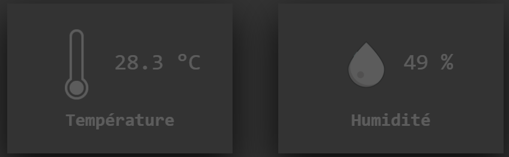

Projets extrascolaires
Projets réalisés en dehors du cadre scolaire.
Tous ces projets ont étés réalisé à 100% par mes soins.
Site web
i
Fondation d'Erotium Primus, un club de sécurité informatique.Création du site web en HTML, CSS, JS et PHP
Site web
i
Réalisation de mon ancien CV sous forme d'un site web basé sur des animations basiques en CSS (ViewBox).App Android
i
Développement d'une application Android (Java avec BD SqLite) qui indique sous forme d'une liste ce qui a été fait dans la journée.Projet réalisé en collaboration
Boutique en ligne
i
Août à Décembre 2020Création d'une boutique en ligne de chaussures nommée SlineShopx.
Développement à l'aide de Wordpress et de WooCommerce
Projets scolaires
Projets réalisés dans le cadre du CFC d'informaticien
Internet des objets
i
Configuration d'un thermomètre sur le réseau SigFox d'internet des objets. Affichage automatique des températures sur un site web réalisé en HTML, CSS et PHP.
Affichage automatique des températures sur un site web réalisé en HTML, CSS et PHP. 
Création de la base de données et documentation complète sur le Wiki du projet GitHub.
App Android
i
Développement d'un jeu vidéo sous forme de quiz. (Java avec BD SqLite)Logiciel VB
i
Développement d'une application, en Visual Basic, de manipulation de données. Compatible sur Windows 10.Conception d'une base de données (MySql).
Jeu vidéo C++
i
Développement d'un jeu vidéo "Fruit Ninja" en C++ orienté objet.